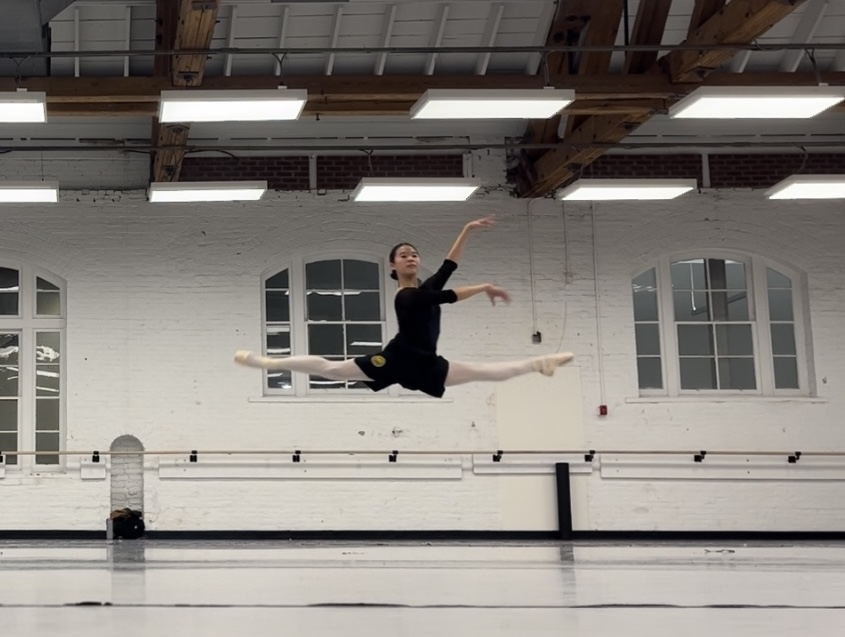

<div class="textcontainer">
<h3>About Me</h3>
<p class="margin"> </p>
<div class="center-row">
<img src="Virginia.jpg" width="300" height=auto alt="Fixed Size Image" alt="placeholder for you about me image">
<p id="aboutme">
Hello! I'm Judy, I am a rising junior living at Wigglesworth this summer. I have many hobbies: ballet, which I have been doing for 4 years; hiking, which I love to do with my friends; and chess, which I have just picked up. I am interested in exploring and creating new things and I'm excited to see what we'll do in this class!
</p>
</div>
<br></br>
This is a recently taken picture of me doing a Saut de Chat in ballet. I dance at balletmet which is in Columbus, Ohio and I dance in a wide variety of productions throughout the year.
<br></br>

<br></br>
<br></br>
</div>